<meta charset="utf-8" />
<style> hint, drill {display: none;} </style>
<script src="../md-components.js"></script>

<import-hints from="./bagrut-hints.html"></import-hints>

<!---------------------------------------------------------->

<code-drills 
    heading="2025-271"
    log-level="W"
>
</code-drills>

<template>

<!---------------------------------------------------------->

<drill lang="java" id="2025-271" as-html>
<a href="./pdf/2025-271.pdf" target="_blank">
    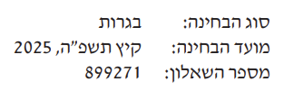
</a>
<a href="./pdf/2025-271.pdf" target="_blank" class="link link-primary ml-6">
    בגרות 2025
</a>
<a href="./pdf/2025-271-slides.pdf" target="_blank" class="link link-primary ml-6">
    שקופיות להדפסה
</a>
<a href="https://www.youtube.com/playlist?list=PLNLf5_3sUeLzAinrmkwRubxKWvu_WfKA6" target="_blank" class="link link-primary ml-6">
    פיתרונות של אריאל בר יתצחק
</a>
<video-list width=380 height=200 list="[
    ['https://youtu.be/', 'Q-1'],
]">
</video-list>
</drill>

<!---------------------------------------------------------->

<drill lang="java" id="q-1-i-0">
public class Person {
    private String name;
    public String getName() { return this.name; }
}

public class Room {
    private Node&lt;Person> people;
    public Node&lt;Person> getPeople() { return this.people; }

    public Room() {
-       this.people = null;     {1}
+       $...$                   {1}
            ~o ht implement
    }
}

$public static $boolean $contains$(Node&lt;Room> hotel, int name) {
        ^$
        ~r ht external-func
    while (hotel != null) {
        Node&lt;Person> lst = $hotel$$.getValue()$.getPeople();
            ~r ht its-a-list
            ^$
        while (lst != null) {
            if (lst.getValue()$.equals($name$)$) {
                    ^ == $ ~r ht strings-are-refs
                    ^$
                return $true$;
                    ^false ~r hr wrong-logic
            }
            lst = lst.getNext();
        }
        hotel = hotel.getNext();
    }
    return $false$;
        ^true ~r hr wrong-logic
}
</drill>

<!---------------------------------------------------------->

<drill lang="java" id="q-1-i-1" no-wrong-phase>
$!html:w-h-r+ 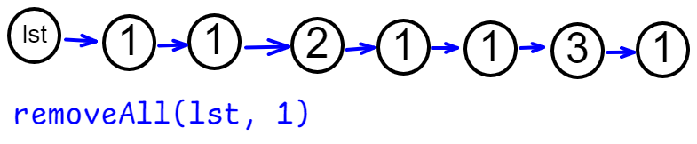
public static Node&lt;Integer> removeAll(Node&lt;Integer> lst, int value) {
    // $מוחקים את הצמתים בראש הרשימה$
            ^... ~o ht implement
    while ($lst$ != null && $lst.getValue()$ == value) {
            ^... ~o ht implement
            ^... ~o ht implement    {+}
        lst = lst.getNext();
    }
    // <bdo dir="rtl">?מה אם מחקנו הכול</bdo>
-    if (lst == null) {             {1}
-        return null;               {1}
-    }                              {1}
+   $...$                           {1}
        ~o ht implement
    // $מוחקים מאמצע של רשימה$
            ^... ~o ht implement
    Node&lt;Integer> prev = lst;
    while (prev.hasNext()) {
        if ($prev.getNext().getValue()$ == value) {
                ^... ~o ht implement
            prev.setNext($prev.getNext().getNext()$);
                ^... ~o ht implement
        } else {
            $prev = prev.getNext();$
                ^... ~o ht implement
        }
    }
    return $lst$;
        ^... ~o ht implement
}
</drill>

<!---------------------------------------------------------->

<drill lang="java" id="q-1-i-2" no-wrong-phase>
class Stack {
    private Node&lt;Integer> lst;

    public Stack() {
+        $...$                  {1}
            ~o hr implement
-        this.lst = null;       {1}
    }

    public void push(int x) {
        this.lst = $new Node<Integer>(x, this.lst)$;
            ^... ~o ht implement
    }

    public int pop() {
        int x = lst.getValue();
+        $...$                      {2}
            ~o hr implement
-       this.lst = lst.getNext();   {2}
        return x;
    }
}

Stack stack = new Stack();
stack.push(123);
stack.push(456);
print(stack.pop());                 // $456$
    ^? ~g hr result
print(stack.pop());                 // $123$
    ^? ~g hr result
</drill>

<!---------------------------------------------------------->

<drill lang="java" id="q-1-a" no-wrong-phase>
class Store {
    private Node&lt;Game> lst;

    public int remove(int n, int pr) {
-        int count = 0;                                 {2}
        // מוחקים את הצמתים בראש הרשימה...
        while ($this.$$lst$ != null &&$ count < n$ && 
                    ^$ ~t                               {1}
                    ~o ht better-with-this              {1}
                    ^ ... ~o ht implement                {2}!
               $this.$$lst$.$getValue()$$.getPrice()$ == pr)
                    ^$ ~t                               {1}
                    ~o ht better-with-this              {1}
                    ~r ht is-it-num                     {+}
                    ^$
        {
            $this.$$lst$ = $this.$$lst$.getNext();      {1}
                ^$
                ~o ht better-with-this
                ^$                                  
                ~o ht better-with-this
-            count++;                                   {3}
        }
            ~r hr return-what                           {3}
        // ?מה אם מחקנו הכול
        if ($this.$$lst$ == null) {                     {1}          
                ^$
                ~o ht better-with-this
            $return$$ count$;                           {3}!
                ~r hr return-what
                ^$
        }                              
        // מוחקים מאמצע של רשימה...
        Node&lt;Game> prev = $this.$$lst$;                 {1}
            ^$
            ~o ht better-with-this
        while (prev.hasNext() &&$ count < n$) {
                ^ ... ~o ht implement
            if (prev.getNext().$getValue()$$.getPrice()$ == pr) {
                    ~r ht is-it-num
                    ^$
                prev.setNext(prev.getNext().getNext());
-                count++;                               {3}
            } else {
                prev = prev.getNext();
            }
        }
-        return count;                                  {3}
    $} $
        ~r hr return-what                               {3}
}
</drill>

<!---------------------------------------------------------->

<drill lang="java" id="q-1-b" no-wrong-phase>
class Store {
    private Node&lt;Game> lst;

    $public $int $minPrice$() {             {1}
            ^$
            ~r hr internal-func
        int min = $Integer.MAX_VALUE;$
            ^... ~o hr implement
        Node<Game> node = $this.$$lst$;     {1}
            ^$
            ~o ht better-with-this
        while (node != null) {
            min = Math.min($min$, $node.getValue().getPrice()$);
                ^... ~o hr implement
                ^... ~o hr implement
            node = node.getNext();
        }
        return min;
    }

    public int removeCheap(int num) {
        int sum = 0;
        while ($num > 0$) {
                ^... ~o ht implement
            int min = $minPrice();$
                ^... ~o ht implement
            int count = $remove(num, min);$
                ^... ~o ht implement
            sum += $min * count;$
                ^... ~o ht implement
            num -= count;
        }
        return sum;
    }
}
</drill>

<!---------------------------------------------------------->

<drill lang="java" id="q-2-i-1" no-wrong-phase>
-// מחזירה אמת אם איקס נימצא בתור       {1}
-// כול המספרים בתור חיוביים            {1}
public static boolean $contains$(Queue&lt;Integer> q, int x) {
        ~g ht using-assumptions     {1}
    boolean found = false;
    q.insert(0);                // $מופתח שאין אפס בתור$
        ^... ~g hr what-happens
    while (q.head() > 0) {      // $בודקים מה הוא האביר הבא$
            ^... ~g hr what-happens
        if (q.head() == x) {    // $בלי להוציא אותו מהתור$
                ^... ~g hr what-happens
            found = true;
        }
        q.insert(q.remove());   // $!גלגל אותו$
            ^... ~g hr what-happens
    }
    q.remove();                 // $להוציא אפס שהיכנסנו$
        ^... ~g hr what-happens
    return found;
}
</drill>

<!---------------------------------------------------------->

<drill lang="java" id="q-2-a" as-html>

</img-areas>
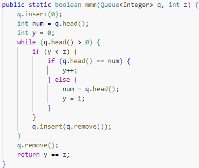
<style>
    .zzz { 
        transition: transform 0.2s;
        transform-origin: left bottom;
    }
    .zzz:hover {
        transform: scale(1.5);
    }
</style>
</drill>

<!---------------------------------------------------------->

<drill lang="java" id="q-2-b" as-html>
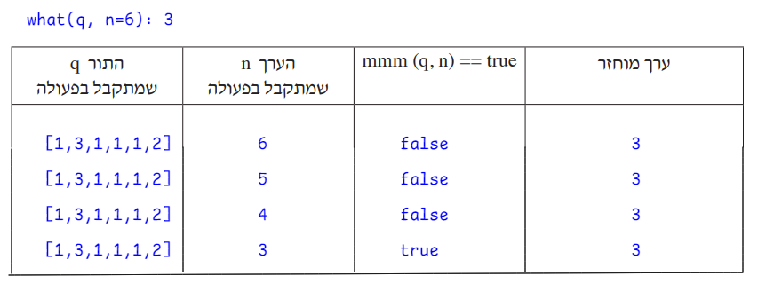
</img-areas>
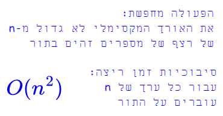
    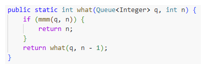
</img-areas>
</drill>

<!---------------------------------------------------------->

<drill lang="java" id="q-3-i-1" no-wrong-phase>
$!html 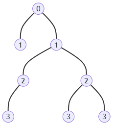
public static boolean isDeeper(BinNode&lt;Integer> node, int d) {
    if (node == null) {
        return $false$;
            ^... ~o hr implement
    }
    if (node.hasLeft() && $d == 0$) {
            ^... ~o hr implement
        return true;
    }
    if ($node.hasRight()$ && $d == 0$) {
            ^... ~o hr implement
            ^... ~o hr implement        {+}
        return true;
    }
    return isDeeper(node.getLeft(), $d-1$) $||$
                ^... ~o hr implement
                ^... ~o hr implement        {+}
           isDeeper(node.getRight(), $d-1$);
                ^... ~o hr implement
}

print(isDeeper(tree, $2$));       // $true$
    ~t ~m
    ~t ~m
print(isDeeper(tree, $3$));       // $false$
    ~t ~m
    ~t ~m
</drill>

<!---------------------------------------------------------->

<drill lang="java" id="q-3-a" no-wrong-phase>
$!html 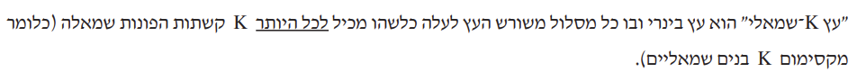
$!html <span dir="rtl" class="float-right">א. סרטטו ”עץ 1־שמאלי" ובו 8 צמתים ומקסימום 4 רמות</span>
$!html <span dir="rtl" class="float-right">ב. כתבו פעולה חיצונית המחזירה אמת אם העץ הוא "עץ K-שמאלי"</span>
$!html:w-h-r+ 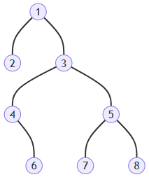
public static boolean isLeftK(BinNode&lt;Integer> node, int k) {
    if (node == null) {
        return $true;$
            ^... ~o hr implement
    }
    if ($node.hasLeft()$ && $k == 0$) {
            ^... ~o hr implement
            ^... ~o hr implement        {+}
        return $false;$
            ^... ~o hr implement
    }
    return isLeftK(node.getLeft(),  $k-1$) &&
                ^... ~o hr implement
           isLeftK(node.getRight(), $k$);
                ^... ~o hr implement
}
</drill>

<!---------------------------------------------------------->

<drill lang="java" id="q-7-a" as-html>
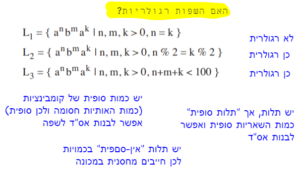
</img-areas>
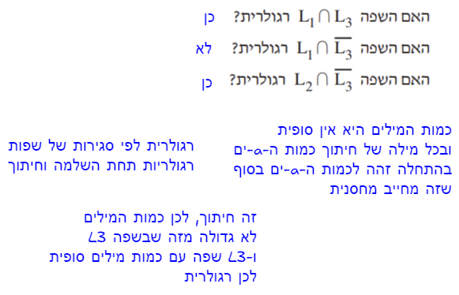
</img-areas>
</drill>

<!---------------------------------------------------------->

<drill lang="java" id="q-7-b-1" as-html>
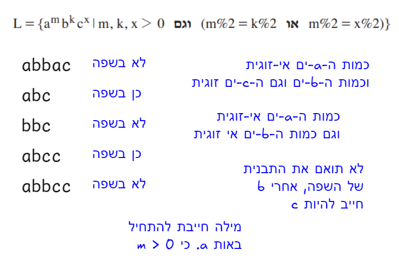
</img-areas>
</drill>

<!---------------------------------------------------------->

<drill lang="java" id="q-7-b-2" as-html>
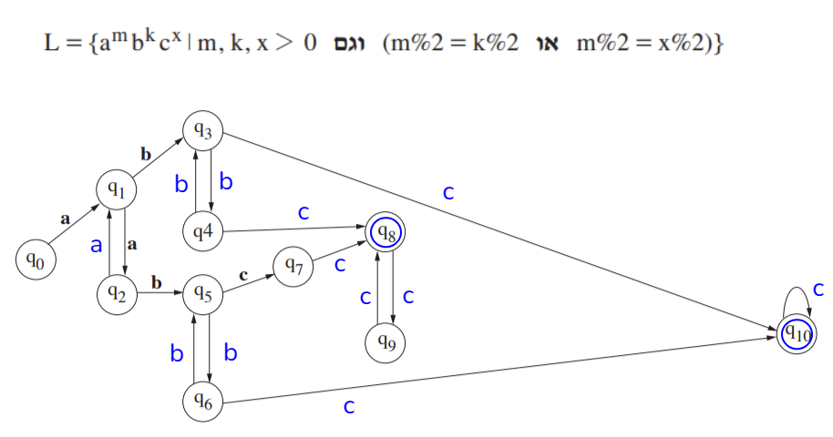
</img-areas>
</drill>

<!---------------------------------------------------------->

<drill lang="java" id="q-8-a" as-html>
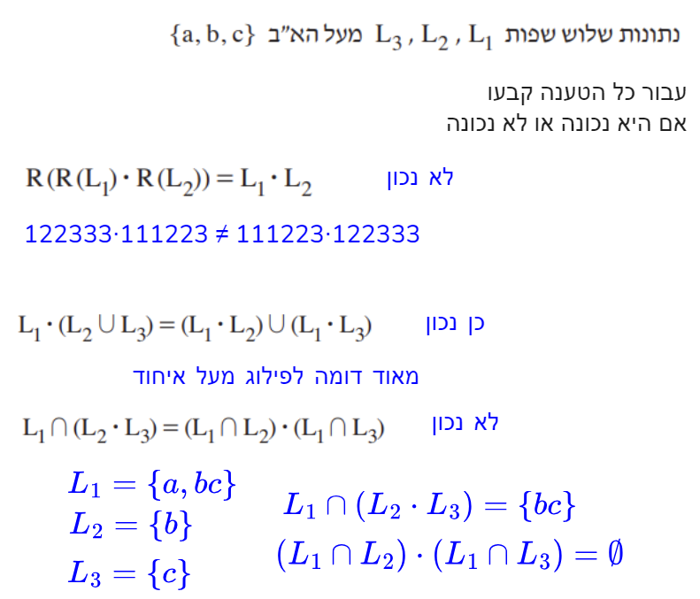
</img-areas>
</drill>

<!---------------------------------------------------------->

<drill lang="java" id="q-8-b" as-html>
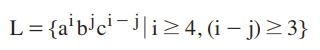
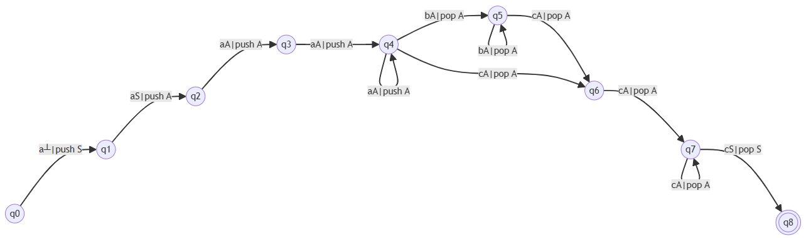
</img-areas>
</drill>

<!---------------------------------------------------------->

<drill lang="java" id="">
</drill>

</template>